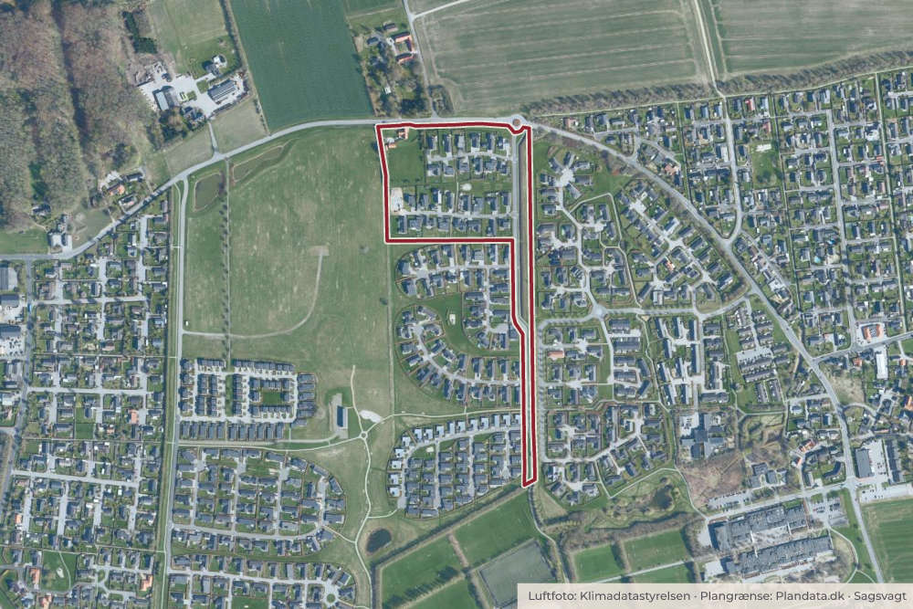

På dagsordenen 2. december, Klima-, Miljø- og Planudvalget, Skanderborg
Dilemma vedrørende Lokalplan 1154 - Boliger i Skovby Nygård, sidste etape

Kort: © OpenStreetMap-bidragydere. Plangrænse: Plandata.dk, Skanderborg Kommune.

Kort fortalt
- Hvem
- Klima-, Miljø- og Planudvalget, Skanderborg Kommune
- Hvornår
- Onsdag 2. december 2026
- Status
- På dagsordenen. Sagen behandles på mødet.
Er noget forkert her? Skriv til os
Hvad kan du gøre?
- Skriv til politikerne
- Udvalgets møder er lukkede, men du kan skrive til medlemmerne før mødet onsdag 2. december 2026. Du finder dem på skanderborg.dk.
Læs hele sagen Kommunens egen tekst
Sagsfremstilling
Økonomi- og Erhvervsudvalget besluttede den 16. juni 2021 (pkt. 168) at igangsætte
planlægningen for sjette og sidste etape af byudviklingsområdet Skovby Nygård mellem Galten
og Skovby. Planarbejdet har siden været præget af et længerevarende forløb med gentagne
drøftelser mellem administrationen og udvikler om projektets udformning og lokalplanens
detaljeringsgrad. Særligt har der været forskellige opfattelser af, hvor stor fleksibilitet der er
hensigtsmæssig, og hvilket grundlag, der skal foreligge, inden planlægningen kan afsluttes.
Ved igangsætningen blev det besluttet "at fortsætte kommune- og lokalplanarbejdet ud fra det
reviderede tegningsmateriale". Det er administrationens vurdering, at dette ikke ændrer på, at
det fremlagte tegningsmateriale fortsat kræver en bearbejdning for at sikre, at projektet kan
realiseres under hensyntagen til områdets terrænforhold, vejanlæg, forsyning, bebyggelsen og
arkitektoniske kvalitet.
Boligområdet ligger i et skrånende terræn med højdeforskelle på op til 2,5 meter inden for de
enkelte boliggrunde. For at boligveje kan overholde vejreglerne, skal lokalplanen muliggøre
terrænregulering op til +/- 1 meter, muligvis mere. Dette har nødvendiggjort en reduktion af
bebyggelsestætheden, større boliggrunde og mere sammenhængende friarealer for at skabe
plads til den fremtidige terrænregulering. Der er imidlertid fortsat væsentlig uenighed om
behovet for en fremtidig terrænreguleringsplan og lokalplanens detaljeringsgrad.
Fremtidig terrænreguleringsplan
Selvom bebyggelsesplanen er blevet væsentligt ændret siden igangsætningen, er det fortsat
ikke vist, at bebyggelsesplanen kan realiseres på en hensigtsmæssig måde. Administrationen
har derfor gentagne gange efterspurgt en fremtidig terrænreguleringsplan, som viser
sammenhængen mellem boliggrunde, veje, bebyggelse og friarealer. Behovet for en
terrænreguleringsplan er ikke nyt, men har været en tilbagevendende problemstilling, der er
rejst overfor udvikler siden 2020.
Administrationens erfaring er, at lokalplaner, hvor terrænforholdene ikke er tilstrækkeligt
afklaret, kan medføre væsentlige udfordringer i den efterfølgende byggemodning og
byggesagsbehandling, fordi området ikke kan udvikles uden omfattende terrænændringer,
dispensationer eller ændringer i bebyggelsesplanen. Derudover kan utilstrækkelig koordinering
mellem terræn, vejprojektering og forsyning medføre væsentlige tekniske udfordringer. Hvis
boliger eksempelvis placeres for lavt i forhold til veje og forsyningsledninger, kan det blive
nødvendigt at etablere individuelle husstandspumper eller føre forsyningsledninger gennem
private haver og fælles friarealer. Sidstnævnte kan medføre behov for tinglysning af
ledningsanlæg og dermed begrænsninger i den fremtidige anvendelse af arealerne. Derudover
har administrationen erfaring med, at de individuelle huse efterfølgende kan opleve
oversvømmelse fra veje under skybrud.
Der er ligeledes risiko for uhensigtsmæssige terrænspring, støttemure og store niveauforskelle
mellem nabogrunde eller mellem boliggrunde og fælles friarealer. Det kan få betydning for
områdets landskabelige fremtræden, tilgængelighed og mulighederne for at etablere
velfungerende private og fælles opholdsarealer.
Udvikler ønsker en lokalplan med fri fleksibilitet, hvor bebyggelsens placering og udformning i
videst muligt omfang først fastlægges ved den efterfølgende projektering. Udvikler vurderer
derfor ikke, at en fremtidig terrænreguleringsplan er et hensigtsmæssigt krav.
En terrænreguleringsplan kan vise, at der er behov for at fastlægge eksempelvis sokkelkoter,
facadebyggelinjer eller mere præcise bestemmelser om bebyggelsens placering og
terrænregulering. Sådanne bestemmelser kan være nødvendige for at sikre en
hensigtsmæssig sammenhæng mellem boliger, veje, forsyning og friarealer.
Udvikler ønsker ikke at blive bundet af bestemmelser på dette detaljeringsniveau og har derfor
ikke ønsket at udarbejde den efterspurgte terrænreguleringsplan. Udvikler har i stedet
fremsendt principsnit for dele af bebyggelsen, hvor boligerne er vist med forskudte niveauer og
skrånende tværsnit på boligveje, hvilket kan reducere behovet for terrænregulering. Udvikler
ønsker imidlertid ikke, at boliger med forskudte niveauer skal være et krav i lokalplanen.
Administrationen har derfor vurderet principsnittene ud fra, at lokalplanen også skal give
mulighed for at opføre boliger i ét sammenhængende niveau og at tværsnittet på boligveje skal
tilrettes, så de overholder Vejdirektoratets vejregler. Principsnittene dokumenterer således
ikke, at bebyggelsen kan realiseres inden for den fleksibilitet, som udvikler ønsker.
Administrationen vurderer på den baggrund fortsat, at der er behov for en samlet
terrænreguleringsplan, som kan dokumentere, at lokalplanens byggemuligheder er realistiske.
Udviklers principsnit er vedlagt som bilag 1.
Det nuværende projekt
Den seneste bebyggelsesplan er vedlagt som bilag 2. Projektet indeholder følgende boligtyper:
Åben-lav boligbebyggelse på grunde på minimum 500 m² og med en maksimal
bebyggelsesprocent på 30.
Tæt-lav boligbebyggelse, med parkering på egen grund, på grunde på minimum 250 m²,
en maksimal bebyggelsesprocent på 60 og et maksimalt grundareal på 40 % af grunden.
Tæt-lav boligbebyggelse, uden parkering på den enkelte grund, på grunde på minimum
200 m² og med en maksimal bebyggelsesprocent på 40.
En storparcel, hvor administrationen har vurderet, at bebyggelsestætheden er for høj, og
boliger er placeret for tæt på skel. Udvikler er ikke enig i denne vurdering.
Bebyggelsen er i én eller to etager med en maksimal bygningshøjde på 8,5 meter.
Området er omfattet af kommuneplanramme 30.B.19. Da kommuneplanrammen tillader en
maksimal bebyggelsesprocent på 40 for tæt-lav boligbebyggelse, og da boligområdernes
afgrænsning afviger fra kommuneplanrammen, kræver projektet et kommuneplantillæg.
Arkitekturpolitik
Foruden den ændrede tæthed og de øgede friarealer har administrationen og udvikler aftalt
følgende præciseringer, der fremgår af lokalplanens bestemmelser:
Boliger skal udføres med taghældning, mens sekundære bygninger også kan have flade
tage.
Der fastsættes minimumskrav til facadedetaljering med forskellige valgmuligheder.
Bebyggelsens skal holdes i mørke nuancer af rød, gul, grå, brun eller grøn af
landskabelige hensyn.
Rækkehusbebyggelse skal udføres med facadeforskydninger på minimum 0,5 meter efter
maksimalt 3 boliger.
Påhængte altaner tillades ikke af hensyn til skygge- og indbliksgener. Integrerede
terrasser tillades.
Udvikler ønsker et boligområde med varieret arkitektur. Lokalplanen stiller derfor ikke krav om
ensartet udformning af boligerne, heller ikke inden for den enkelte rækkehusbebyggelse.
Dilemma
Den langvarige dialog med udvikler har medført flere forbedringer af projektet, men det har ikke
været muligt at opnå enighed om behovet for en fremtidig terrænreguleringsplan og den deraf
følgende regulering af bebyggelsen. Administrationen afventer ligeledes en brandredningsplan
på bebyggelsesplan-niveau for boliger uden mulighed for parkering på egen grund.
Det politiske dilemma er således, om lokalplanarbejdet skal fortsætte på grundlag af udviklers
ønske om en høj grad af fleksibilitet, med den risiko det indebærer for projektets efterfølgende
realisering, eller om administrationens krav om en samlet fremtidig terrænreguleringsplan med
de bestemmelser den kan medføre, skal fastholdes som forudsætning for det videre
planarbejde.
Dialog og høring
Indstilling
Chefen for Plan, Teknik og Miljø indstiller,
at der træffes beslutning om en af følgende handlinger:
Lokalplanen og kommuneplantillægget færdiggøres på nuværende
detaljeringsniveau uden en fremtidig terrænreguleringsplan
eller
Lokalplanen og kommuneplantillægget sættes på pause, og administrationens
ressourcer benyttes til andre plansager, indtil udvikler har leveret det ønskede
materiale, og administrationen har tid til at genoptage sagen.
Kilde: Skanderborg Kommune, Klima-, Miljø- og Planudvalget, dagsorden fra mødet onsdag 2. december 2026, punkt 7. Læs den originale sag hos kommunen.